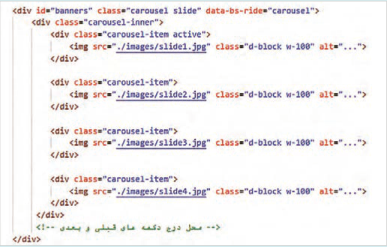
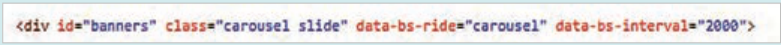
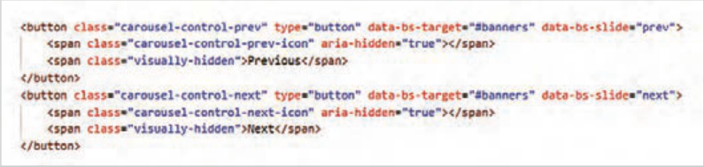
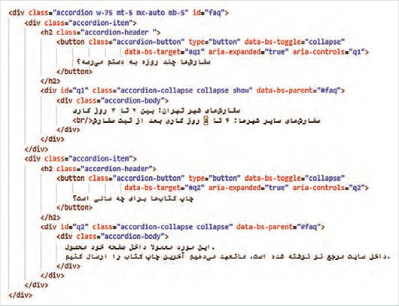
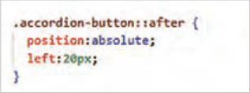
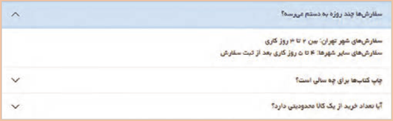

صفحه ۱۸۵
جدول ٣١ کلاسهای کروسل
نام کلاس
کاربرد
برای نگهدارنده اصلی کروسل استفاده میشود. نگهدارندۀ اصلی، تمام اجزای کروسل
Carousel
را دربرمیگیرد.
Slide
انیمیشن اسلاید را در هنگام تغییر اسلایدها فعال میکند.
carousel-inner
برای نگهدارندۀ عناصر اسلاید بهکار میرود.
برای هر اسلاید در کروسل استفاده میشود. عنصری که دارای کلاس -carousel
carousel-item
item است، محتوای اسلاید (تصاویر، متن و...) را در برمیگیرد.
active
مشخص میکند کدام اسلاید در حال حاضر نمایش داده میشود.
carousel-control-prev
برای دکمۀ انتقال به اسلاید قبلی استفاده میشود.
carousel-control-next
برای دکمۀ انتقال به اسلاید بعدی استفاده میشود.
برای ایجاد نشانگرهای روی اسلاید استفاده میشود؛ دایرههای کوچکی که نشان
carousel-indicators
میدهند چند اسلاید وجود دارد و در حال حاضر کدام اسلاید نمایش داده میشود.
carousel-caption
برای افزودن متن یا توضیحات به اسلایدهای کروسل استفاده میشود.
طراحی کروسل بالای صفحه فروشگاه
کار کارگاهی
در این کارگاه چند تصویر بنر تبلیغاتی را درون کروسل به نمایش خواهید گذاشت.
تصاویر بنرهای تبلیغاتی را با اسامی slide1، slide2 و slide3 درون پوشه تصاویر پروژه ذخیره نمایید.
کدهای شکل زیر را در فایل index.html در ابتدای برچسب <main> وارد کنید:

صفحه ۱۸۶
فایل را ذخیره کنید و نتیجه را در مرورگر بررسی کنید.
در حال حاضر دکمههای کنترلی به کروسل اضافه نشده است، بنابراین برای مشاهده اسلاید بعدی 5ثانیه صبر کنید.
ویژگی "data-bs-ride="carousel برای فعالسازی حرکت خودکار کروسل استفاده میشود. این ویژگی به عنصر کروسل اعلام میکند که اسلایدها را پس از یک مدت زمان مشخص تغییر دهد.
مدت زمان نمایش هر اسلاید در اسلایدر با ویژگی data-bs-interval قابل تنظیم است. برای این منظور، -data "bs-interval="2000 را به تگ مربوطه اضافه کنید.

کد دکمههای «بعدی» و «قبلی» را در محل مشخصشده در کد کروسل اضافه کنید:

"data-bs-target="#banners: مشخص میکند این دکمه کدام Carousel را کنترل میکند.
"data-bs-slide="prev: انتقال به اسلاید قبلی به کمک این ویژگی انجام میشود.
کلاس carousel-control-prev-icon: این کلاس، آیکن فلش چپ () را برای دکمۀ «اسلاید قبلی» نمایش میدهد.
کلاس visually-hidden برای مخفی کردن عبارات Previous و Next از دید کاربران عادی استفاده شده است، اما ابزارهای صفحهخوان محتوای عنصر <span> را برای کاربران نابینا میخوانند. در واقع عنصر <span> با ویژگی visually-hidden برای کاربران نابینا نوشته میشود.
ویژگی"aria-hidden="true در دکمههای کنترلی به صفحهخوانها اعلام میکند که این عنصر باید نادیده گرفته شود و برای کاربران نابینا در دسترس نیست.
آکاردئون آکاردئون یکی از اجزای کاربردی بوتاسترت است که به توسعهدهنده امکان میدهد محتوا را در بخشهای قابل باز و بسته شدن نمایش دهد. آکاردئون بهصورت پیشفرض بسته است. با کلیک روی عنوان هر بخش، محتوای مربوط به آن ظاهر میشود و با کلیک بعدی مخفی میگردد. این ویژگی برای سازماندهی محتوای طولانی و نمایش اطلاعات به صورت فشرده بسیار مفید است.
آکاردئون میتواند در طراحی بخشهای مختلفی کاربرد داشته باشد؛ مانند منوی ناوبری و کشویی، نمایش اطلاعات تکمیلی یک بخش، ایجاد بخش سوالات متداول و غیره.
صفحه ۱۸۷
در طراحی یک آکاردئون کلاسهای مختلفی استفاده میشود. جدول ٤١ اسامی کلاسها و کاربرد هر یک را نشان میدهد.
جدول 14 کلاسهای آکاردئون
نام کلاس
کاربرد
این کلاس برای ایجاد نگهدارنده اصلی آکاردئون استفاده میشود و تمام عناصر آکاردئون
Accordion
را در بر میگیرد.
یک آکاردئون دارای چند بخش (Item) است که هر بخش مجزا از این کلاس استفاده
Accordion-item
میکند. هر بخش شامل یک header و یک محتوای قابل جمع شدن است.
این کلاس برای ایجاد header در هر بخش استفاده میشود و معمولاً شامل یک دکمه یا
Accordion-header
پیوند است که با کلیک بر روی آن، محتوای مربوط به آن بخش آشکار یا مخفی میشود.
Accordion-button
استایل دکمهای که روی آن کلیک میشود را تعیین میکند.
Accordion-collapse
این کلاس برای تعیین استایل عنصری که محتوای قابل جمع شدن دارد بهکار میرود.
Accordion-body
این کلاس برای ایجاد محتوای قابل نمایش در هر بخش (Item) استفاده میشود.
Collapse
برای باز و بسته شدن محتوا بهکار میرود.
show
این کلاس باعث میشود که محتوای یک عنصر بهصورت باز نمایش داده شود.
عنصر <div> با کلاس accordion-item باید به تعداد بخشهای آکاردئون استفاده شود.
صفحه ۱۸۸
طراحی بخش پاسخ به پرسشهای متداول
کار کارگاهی
در کارگاه طراحی فوتر، گزینه پرسشهای متداول درون ستون اول قرار گرفت. در این کارگاه صفحه مربوط به این گزینه را طراحی خواهید کرد.
1 فایل index.html را باز کنید و از منوی File گزینه Save As را انتخاب کنید. نام فایل جدید را
faq.html قرار دهید. کلمه faq مخفف Frequently Asked Questions است.
2 محتوای عنصر main را بهطور کامل پاک کنید و کد آکاردئون را به طبق کدهای زیر درون آن بنویسید:

این آکاردئون دارای دو بخش است. با توجه به اینکه کلاسshow برای بخش اول استفاده شده است در نتیجه محتوای بخش اول در حال نمایش خواهد بود.
3 در حالت پیشفرض فلش کنار هر دکمه بهصورت رو به بالا و در کنار متن دکمه نمایش داده میشود.
برای اصلاح این وضعیت از استایل زیر در فایل styles.css استفاده کنید:

انتخابگر accordion-button::after عنصر بعد از عنوان دکمه (آیکن فلش) را انتخاب میکند.
صفحه ۱۸۹
فعالیت
بخش سوم را با محتوای زیر به آکاردئون اضافه کنید:
درصورتیکه کالا در فروش ویژه باشد، شامل محدودیت در تعداد خرید میشود. در غیر این صورت هیچگونه محدودیتی وجود ندارد.
انتظار میرود که در پایان خروجی زیر را بهدست آورید:

فعالیت
پرسشهای متداول در بخش فوتر سایت را به فایل faq.html لینک کنید.